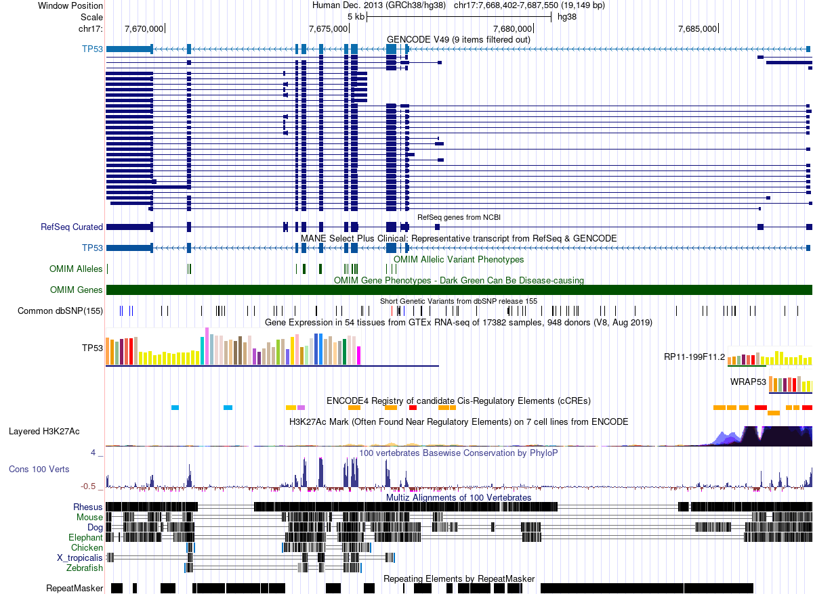
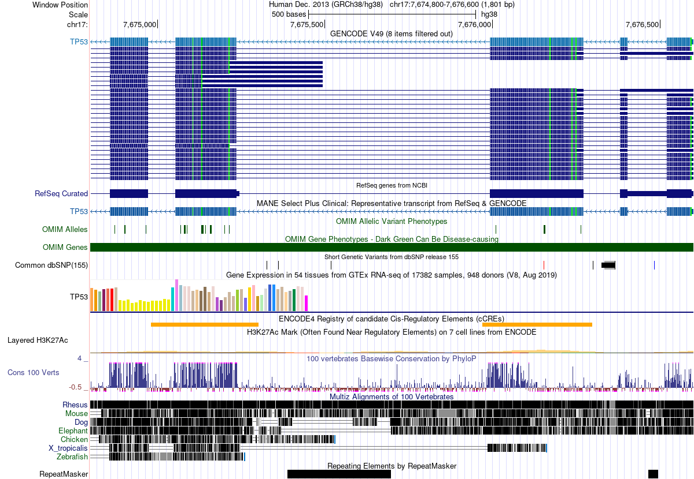
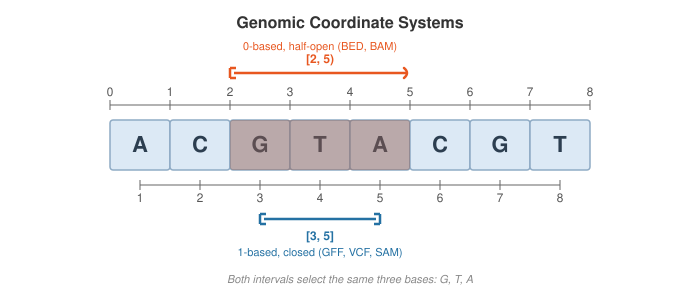
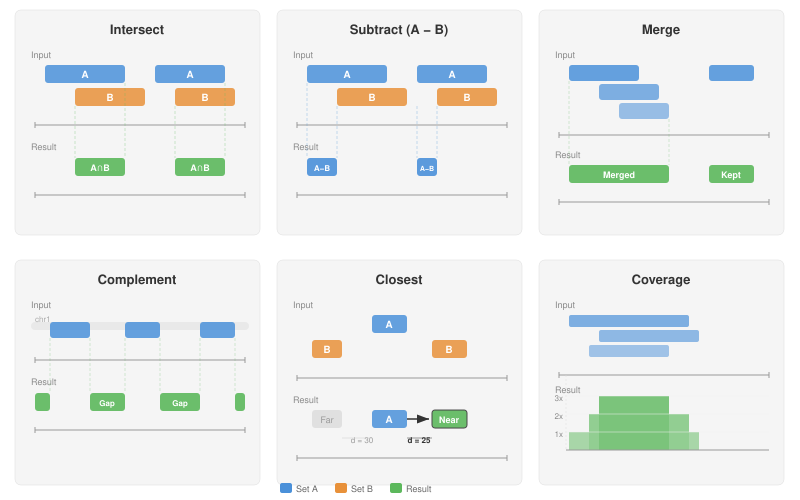
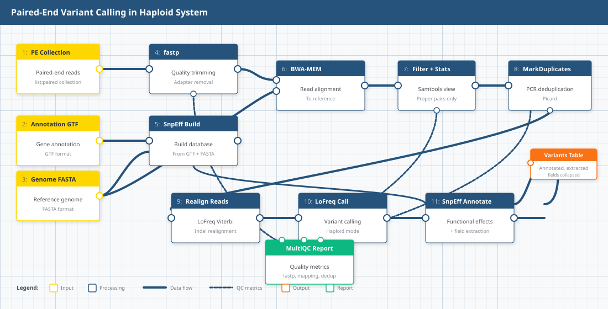

Lecture 21: Interval Operations for Genomic Coordinates
Learning Objectives
By the end of this lecture, you will be able to:
- Distinguish 0-based half-open from 1-based closed coordinate systems
- Read and write BED and GFF/GTF format files
- Perform core interval operations: intersect, subtract, merge, complement, closest, and coverage
- Use BEDTools in Galaxy to manipulate genomic intervals
- Apply interval operations to filter and combine genomic annotations
- Navigate the UCSC Genome Browser and recognize tracks as interval datasets
1. The Genome Browser: Intervals Everywhere
The UCSC Genome Browser is the most widely used tool for visualizing genomic data [4]. It displays a region of a reference genome as a horizontal coordinate axis, with datasets stacked vertically as tracks. Here we look at the human TP53 tumor suppressor gene on chromosome 17:

The horizontal axis spans ~19 kb of chromosome 17. Every colored block, bar, or line in the image represents a genomic interval—a feature with a start and end position on the chromosome.
1.1 What Is a Track?
A track is a dataset projected onto genomic coordinates. Each feature within a track is an interval. The browser view above contains over a dozen tracks, each representing a different type of genomic annotation:
- GENCODE / RefSeq gene models — exons (thick blocks) and introns (thin lines with arrows) defining transcript structure
- OMIM Alleles — positions of disease-associated variants (single-base intervals)
- Common dbSNP — known polymorphisms from dbSNP release 155
- GTEx expression — tissue-specific expression levels (bar chart mapped to gene intervals)
- ENCODE cCREs — candidate cis-regulatory elements (enhancers, promoters, insulators)
- H3K27Ac — histone acetylation peaks marking active regulatory regions
- Conservation (PhyloP) — per-base conservation scores across 100 vertebrates
- Multiz alignments — cross-species sequence alignments (Rhesus, Mouse, Dog, Elephant, Chicken, Zebrafish)
- RepeatMasker — repetitive elements (SINEs, LINEs, DNA transposons)
Zooming in reveals the individual interval features more clearly:

1.2 The Key Insight
Every track in the genome browser is a collection of genomic intervals. Genes, repeats, regulatory elements, variants, aligned reads—all intervals. The browser is visualizing interval arithmetic. This lecture teaches you to perform that arithmetic yourself.
2. What Is a Genomic Interval?
Every genomic feature—a gene, an exon, a variant, a ChIP-seq peak, an aligned read—can be represented as an interval: a contiguous stretch of a chromosome defined by three values:
(chromosome, start, end)Interval arithmetic lets us ask relational questions about these features: Which variants fall inside genes? Which peaks overlap promoters? What fraction of the genome is covered by repeats? The answers come from a small set of set-theoretic operations on intervals.
In Lecture 20 we produced VCF files containing variant positions, used GTF gene annotations, and mentioned BEDTools as a key toolkit. This lecture formalizes the interval algebra behind those operations.
3. Coordinate Systems
Genomics uses two coordinate conventions. Confusing them causes off-by-one errors—the single most common bug in bioinformatics pipelines.

3.1 0-Based, Half-Open
Used by BED format.
- The first base of a chromosome is position 0
- The interval is
[start, end)—start is included, end is excluded - Length =
end - start
Example: the three bases GTA starting at the third position of ACGTACGT are represented as (2, 5).
3.2 1-Based, Closed
Used by GFF/GTF, SAM/BAM, and VCF formats.
- The first base of a chromosome is position 1
- The interval is
[start, end]—both start and end are included - Length =
end - start + 1
The same three bases GTA are represented as (3, 5).
3.3 Format-to-Coordinate Mapping
| Format | System | First base | End included? |
|---|---|---|---|
| BED | 0-based, half-open | 0 | No |
| GFF/GTF | 1-based, closed | 1 | Yes |
| SAM/BAM | 1-based, closed | 1 | Yes |
| VCF | 1-based | 1 | N/A (single position) |
BAM is the binary-compressed form of SAM. Internally BAM stores positions as 0-based, but this is a serialization detail—every tool that reads BAM (samtools, pysam, IGV) presents coordinates as 1-based, identical to SAM. You never need to handle this conversion yourself.
3.4 Converting Between Systems
To convert the same feature:
- BED → GFF:
GFF_start = BED_start + 1,GFF_end = BED_end - GFF → BED:
BED_start = GFF_start - 1,BED_end = GFF_end
Mixing coordinate systems silently shifts every interval by one base. Downstream analyses will appear to work but produce subtly wrong results—variants assigned to wrong genes, peaks missing promoters by one base. Always check which system your files use before combining them.
4. Interval File Formats
4.1 BED Format
BED (Browser Extensible Data) is the simplest and most widely used interval format. It is tab-delimited and 0-based half-open.
BED3 — the minimal form:
NC_004318.2 322 1056
NC_004318.2 4528 6356
NC_004318.2 9843 12402Three columns: chrom, chromStart, chromEnd.
BED6 adds name, score, and strand:
NC_004318.2 322 1056 PF3D7_0400100 0 +
NC_004318.2 4528 6356 PF3D7_0400200 0 -
NC_004318.2 9843 12402 PF3D7_0400300 0 +BED12 extends to 12 columns, adding fields for thick display regions and block (exon) structure—used for multi-exon gene models in genome browsers.
BED files must be tab-delimited (not space-delimited) and should not have a header line. Many tools silently produce wrong results if these conventions are violated.
4.2 GFF3/GTF Format
GFF3 (General Feature Format) and GTF (Gene Transfer Format, essentially GFF version 2) use nine tab-delimited columns and 1-based closed coordinates:
NC_004318.2 RefSeq gene 323 1056 . + . ID=PF3D7_0400100;Name=RNF5
NC_004318.2 RefSeq gene 4529 6356 . - . ID=PF3D7_0400200;Name=PF3D7_0400200Columns: seqid, source, type, start, end, score, strand, phase, attributes.
Notice the same gene PF3D7_0400100 has start=322 in BED and start=323 in GFF—a direct consequence of the coordinate system difference.
4.3 VCF Positions
VCF uses 1-based coordinates for the POS field. Students encountered this in Lecture 19 and Lecture 20. A VCF record with POS=1024 refers to the 1024th base on the chromosome.
To convert a single-nucleotide variant to BED: BED_start = VCF_POS - 1, BED_end = VCF_POS.
5. Core Interval Operations
Six operations form the foundation of interval arithmetic in genomics. Nearly every analysis question can be decomposed into a sequence of these operations.

5.1 Intersect
What it does: finds the overlapping portions between two interval sets A and B.
Biological use case: “Which of my called variants fall within annotated genes?” We answered this in Lecture 20 using SnpEff—but the underlying operation is an intersection of variant positions with gene intervals.
bedtools intersect -a variants.bed -b genes.bedKey flags:
-wa/-wb: report the original A/B entry (not just the overlap)-v: report entries in A with no overlap in B (the anti-join)-f 0.50: require at least 50% of A to be overlapped-r: apply the overlap fraction reciprocally to both A and B
5.2 Subtract
What it does: removes portions of A that overlap with B.
Biological use case: “Remove all variants in repetitive or low-complexity regions before downstream analysis.”
bedtools subtract -a variants.bed -b repeats.bed5.3 Merge
What it does: collapses overlapping or adjacent intervals within a single set into non-overlapping intervals.
Biological use case: “Collapse overlapping exon annotations into non-redundant gene bodies.”
bedtools sort -i exons.bed | bedtools merge -i -bedtools merge requires sorted input. Always pipe through bedtools sort first.
5.4 Complement
What it does: returns the regions of the genome not covered by any interval in the input set.
Biological use case: “What fraction of chromosome 4 is intergenic (not covered by any gene annotation)?”
bedtools complement -i genes.bed -g genome.txtThe -g flag requires a genome file—a two-column tab-delimited file listing each chromosome and its length:
NC_004318.2 12004905.5 Closest
What it does: for each interval in A, finds the nearest interval in B.
Biological use case: “For each intergenic variant, what is the nearest gene?”
bedtools closest -a intergenic_variants.bed -b genes.bed5.6 Coverage
What it does: counts how many intervals in B overlap each interval in A.
Biological use case: “How many variants fall within each gene? Which genes have the highest variant density?”
bedtools coverage -a genes.bed -b variants.bedOutput appends columns for: count of overlaps, number of bases covered, interval length, and fraction covered.
6. BEDTools
6.1 History
BEDTools was created by Aaron Quinlan and Ira Hall in 2010 [1]. It provides over 30 subcommands for interval manipulation and has become the de facto standard for genomic interval arithmetic. The toolkit is available both on the command line and within Galaxy.
6.2 Architecture
Early versions of BEDTools used interval trees—a balanced binary search tree where each node stores an interval, enabling overlap queries in O(log n + k) time (n = database intervals, k = overlaps found). For ~25,000 genes, finding overlaps requires roughly 15 comparisons instead of 25,000. Modern BEDTools (v2.18+) defaults to a sweep-line algorithm (“chromsweep”) for sorted input, which scans both files in coordinate order and achieves even better performance in practice. The interval tree approach is retained as a fallback for unsorted data.
6.3 Command Pattern
Every BEDTools command follows the same pattern:
bedtools <subcommand> [options] -a <fileA> -b <fileB>Common subcommands:
| Subcommand | Operation |
|---|---|
intersect |
Intersect two interval sets |
subtract |
Subtract B from A |
merge |
Merge overlapping intervals |
complement |
Genome regions not in input |
closest |
Nearest feature in B for each in A |
coverage |
Count overlaps and compute coverage |
sort |
Sort intervals by position |
getfasta |
Extract FASTA sequences for intervals |
slop |
Expand intervals by a fixed number of bases |
flank |
Create intervals from the flanks of features |
7. Hands-On: Variants in S. aureus
7.1 The Story
Kaku et al. [5] conducted a nationwide surveillance of methicillin-resistant Staphylococcus aureus (MRSA) bloodstream infections across 51 Japanese hospitals in 2019. They collected 270 MRSA isolates from blood cultures and performed whole-genome sequencing to characterize the molecular epidemiology of these infections. The key finding: SCCmec type IV has replaced SCCmec type II as the dominant MRSA lineage in Japanese bloodstream infections, with ST8-IV (30.7%) and ST1-IV (29.6%) as the most prevalent combinations. The study revealed distinct geographic patterns—ST1-IV dominated in eastern Japan while ST8-IV was more common in the west—and demonstrated that the newer type IV strains show greater susceptibility to clindamycin and minocycline compared to the older type II strains.
We use a subset of these data—already processed through a variant-calling pipeline—to practice interval operations. Our goal: determine whether specific genes of interest carry mutations in these MRSA isolates.
7.2 The Variant-Calling Workflow
The data in the shared history were generated using the Paired-End Variant Calling in Haploid System workflow from the Intergalactic Workflow Commission (IWC). This standardized Galaxy workflow takes three inputs—paired-end reads, a reference genome, and gene annotations—and produces an annotated variant table.

The pipeline proceeds in four phases:
- Quality control:
fastptrims adapters and low-quality bases from paired-end reads - Alignment:
BWA-MEMmaps trimmed reads to the reference genome, followed bySamtools view(filtering to properly paired reads) andMarkDuplicates(removing PCR duplicates) - Variant calling:
LoFreq Viterbirealigns reads around indels, thenLoFreq Callidentifies variants in haploid mode - Annotation:
SnpEffannotates variants with functional effects (missense, synonymous, etc.) andSnpSiftextracts key fields into a final table
A MultiQC report aggregates quality metrics from fastp, mapping, and deduplication steps. The final output is a collapsed table of annotated variants across all samples.
7.3 Data
Import the pre-analyzed history into your Galaxy account:
- Make sure you are logged in to usegalaxy.org
- Import the shared history: https://usegalaxy.org/u/cartman/h/unnamed-history-13
- Click Import history (the “+” icon at the top of the history panel)
The history contains variant calls (VCF) and gene annotations (GFF) from the MRSA analysis pipeline.
7.4 Genes of Interest
We focus on five S. aureus NCTC 8325 genes that play roles in virulence, cell wall maintenance, and antibiotic resistance:
| Protein accession | Gene | Function |
|---|---|---|
| YP_500520.1 | SAOUHSC_02023 | Bifunctional autolysin |
| YP_499546.1 | SAOUHSC_01049 | Predicted protein |
| YP_501041.1 | SAOUHSC_02545 | Predicted protein |
| YP_500662.1 | SAOUHSC_02165 | Predicted protein |
| YP_499519.1 | SAOUHSC_01022 | Predicted protein |
Our question: Do any of these genes carry genetic variants in the MRSA isolates? We will answer this using bedtools intersect—overlaying variant positions with gene coordinates.
We will work through this analysis together in class using the Galaxy history above and the BEDTools operations from Sections 5 and 6.
8. Beyond BEDTools
BEDTools is the most widely used interval toolkit, but alternatives exist for specific workflows:
bedops[2]—optimized for speed on very large datasets; uses a streaming architecture that avoids loading entire files into memorypybedtools[3]—a Python wrapper around BEDTools that enables scripting interval operations in Python (with optional conversion to pandas DataFrames)GenomicRanges—the R/Bioconductor equivalent; dominant in the R ecosystem for genomic data analysisbioframe—a pure Python library built on pandas; no BEDTools dependency required
The choice depends on your analysis environment: BEDTools for command-line pipelines, pybedtools or bioframe for Python scripts, GenomicRanges for R workflows. The underlying operations are identical.
- Every genomic feature is an interval defined by (chromosome, start, end)
- Coordinate systems matter: BED uses 0-based half-open; GFF/GTF and SAM/BAM use 1-based closed; VCF uses 1-based positions. Mixing systems causes off-by-one errors.
- Six core operations—intersect, subtract, merge, complement, closest, coverage—form the algebra of genomic interval analysis
- BEDTools is the standard toolkit, available on the command line and in Galaxy
- Most genomic analysis questions can be decomposed into sequences of interval operations
References
- Quinlan, A.R. & Hall, I.M. (2010). BEDTools: a flexible suite of utilities for comparing genomic features. Bioinformatics, 26(6), 841–842.
- Neph, S. et al. (2012). BEDOPS: high-performance genomic feature operations. Bioinformatics, 28(14), 1919–1920.
- Dale, R.K. et al. (2011). pybedtools: a flexible Python library for manipulating genomic datasets and annotations. Bioinformatics, 27(24), 3423–3424.
- Kent, W.J. et al. (2002). The Human Genome Browser at UCSC. Genome Research, 12(6), 996–1006.
- Kaku, N. et al. (2022). Changing molecular epidemiology and characteristics of MRSA isolated from bloodstream infections: nationwide surveillance in Japan in 2019. Journal of Antimicrobial Chemotherapy, 77(8), 2130–2141.